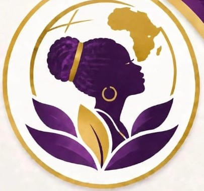
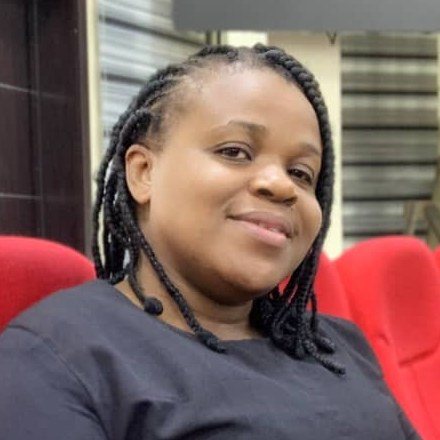

Our Vision
An Afrika where every girl values her natural beauty and thrives in harmony with nature.

Nature Girlsfor Great AfrikaNon-Governmental Organization
Educate • Empower • Elevate
Building confidence through natural beauty. Making Black African girls believe in their natural beauty.
Nurturing Nature. Shaping Greatness. Building Afrika.
Nature Girls for Great Afrika is a Non-Governmental Organization founded by Barr. Ada Ruby Ezuruka (Ph.D.), with co-founder Ijeoma Pearl Ezurukam.
We are dedicated to empowering girls, building futures, and transforming Afrika by helping young Black African girls discover confidence, health, and pride in their natural identity and environment.
An Afrika where every girl values her natural beauty and thrives in harmony with nature.
To educate, empower, and elevate African girls through self-awareness, health education, and environmental stewardship.
Empowering Girls. Building Futures. Transforming Afrika.

Our 5 Pillars
We help girls love their skin, natural hair, and African features through confidence-building workshops, mentorship, affirmations, and real-life success stories.
We empower young girls with knowledge of nutrition, puberty, menstrual hygiene, and healthy living. We educate on avoiding harmful practices such as skin bleaching, heavy makeups, fixing of eyelashes, artificial long hairs, and long nails, and promote natural body care with essential oils like shea butter, coconut oil, and aloe vera.
We build knowledge and love for nature through school clubs, nature walks, storytelling, and African indigenous wisdom about plants, soil, water, and seasons.
We lead tree planting, clean-up campaigns, and climate action projects, and teach reduce, reuse, recycle for sustainable communities.
We train girls to cultivate home and school herb gardens (moringa, scent leaf, bitter leaf, lemongrass, aloe vera) and learn their medicinal and nutritional uses.
Volunteer as a mentor.
Partner with us as a school, NGO or corporate sponsor.
Start a Nature Girls Club in your school.
Support girls' education and empowerment.
GTBank
Ada · 0043818447
Empowering Girls. Building Futures. Transforming Afrika.